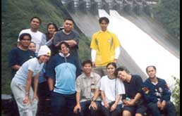

Conquering
Mount Pulag
by: Brian Co

>>>
click here for more pictures
Conquering
Mt. Pulag: A Hesitant Climber’s Account: Day 4
Day 4, Aug. 24, 8:00 am
When I woke up, Pres and her friends have already gone back
to Manila. Lorna, Jojo, Ryan, Joel, and Francis were all packing
their things for their 10:20 am bus ride back to Manila while
Harold, Tetet, and I were making plans for our extended vacation
in Baguio.
Post Script, Sep 26, 10:00 pm
Some of you may be wondering. Was it worth it? Do I regret
having joined the group? Was climbing Mt. Pulag one of the
hardest experiences of my life? Does Harold really not take
a bath every day?
Allow me to answer this way. I have decided that mountain
climbing is not for me and that as much as I can help it,
I will only climb one mountain in my entire lifetime and that
mountain is Mt. Pulag. I have also decided that no matter
what happens, I will one day see the sun rise from Mt. Pulag’s
peak.
|